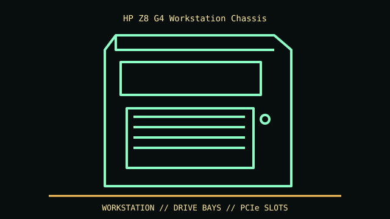

[ MODEL IDENTIFICATION // HP Z8 G4 DUAL-SOCKET WORKSTATION TOWER ]
HP Z8 G4 Workstation Chassis
About 17.5 × 8.0 × 21.7 in (H × W × D); specified GPU maximum up to 12 in (304.8 mm), configuration and cabling dependent.

REVISION CAVEAT: Z8 G4 differs from Z8 G5 and Z6 G4. QuickSpecs revisions/configurations vary by product number, CPU, PSU, GPU and drive cages.
Specifications & fit
| Catalog subcategory | Professional workstation enclosures |
|---|---|
| Model / generation | HP Z8 G4 dual-socket workstation tower |
| Dimensions / form factor / clearance | About 17.5 × 8.0 × 21.7 in (H × W × D); specified GPU maximum up to 12 in (304.8 mm), configuration and cabling dependent. |
| Drive bays | Two external 5.25-inch bays, four internal 3.5-inch positions (2.5-inch with adapters) and slim optical bay as listed in QuickSpecs. |
| Compatibility | HP-specific board/PSU, tool-less retention and cooling; PCIe cards depend on CPU/riser/slot/PSU combination. Not an ATX donor case without modification. |
| Revision identification | Z8 G4 differs from Z8 G5 and Z6 G4. QuickSpecs revisions/configurations vary by product number, CPU, PSU, GPU and drive cages. |
Compatibility & preservation notes
HP-specific board/PSU, tool-less retention and cooling; PCIe cards depend on CPU/riser/slot/PSU combination. Not an ATX donor case without modification.
Heavy chassis: safe lift; retain airflow baffle, fan modules, PCIe hardware and drive cables. Follow HP service procedures around PSU and boards.
- Record the complete model/SKU, serial/date label, board and bay/backplane identifiers, accessories and manual revision before disassembly.
- For servers/workstations, match the exact riser, backplane/controller, drive carrier, PSU and rail kit; a matching 2U/4U height alone does not ensure compatibility.
- Keep original brackets, fasteners, trays, feet and front-panel parts labeled with the chassis. Do not force components into modified or incomplete specimens.
Manufacturer, archive & standards sources
- HP — Z8 G4 Workstation QuickSpecsPrimary manufacturer or technical-reference source for this named model; use the exact SKU/document revision.
- HP Support — Z8 G4 WorkstationAdditional manufacturer, archival, or dimensional reference. Options and specimen condition can change fit.
Approximate or convention-dependent dimensions are marked as such. Measure the individual unit for restoration, shipping and installation.